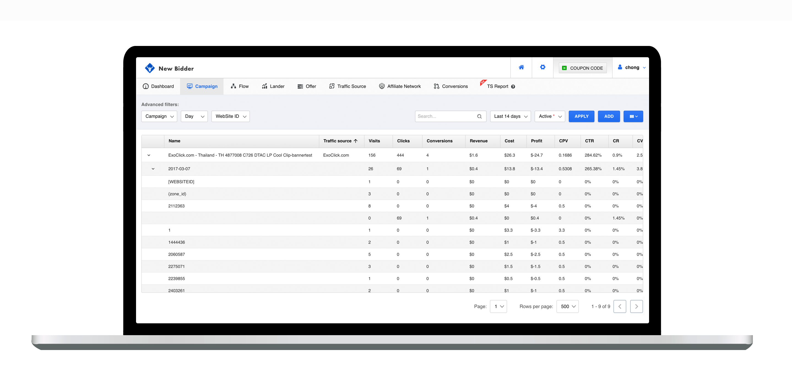
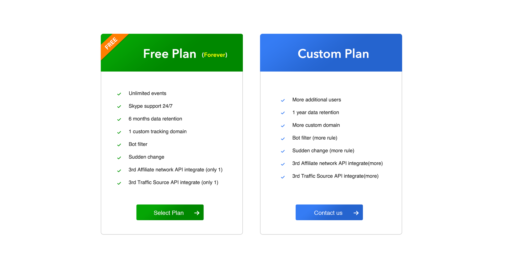

Why Choose Newbidder Over Other Tracking Platforms?

Above is the dashboard of the Newbidder tracking.
The following is my comprehensive guide to using Newbidder.com. It’s the best tracking solution out there, and it’s what I personally use on my campaigns.
I wanted to write one that’s for affiliates, as an affiliate. I made this so simple that even the newbiest of the newbs can set up their first campaign with this guide.
The team behind Newbidder.com have proofread this guide to make sure all of the advice is 100% correct.
Pic 2. our new feature overview
What is New feature in our Tracking?
1. Newbidder TRK integrates some of popular traffic source into our system through API, and pull the data for you after you set token on our system, it bring you much more convenience to analysis data and mange your campaign from your traffic source in one panel.which synchronize all the real cost of different parameters such as website id, country post back from the 3rd Traffic source like popads, zeropark.,etc see the pic 2
2. Which surprise me is the flexible report system
The Report system provides 20+ variables and 3 dimension group by to analysis your data deeply and looking for positive profit dimension and potential chance.eg, you can find which website id is profitable in which day in which campaign,.it is really flexible and useful for me.
The tracking software can tell you the visitor’s IP address, country, operating system, time when the conversion takes place, the carrier information if the visitor is on a mobile device, and much more.
These variables are the clues you use to help you optimize a campaign and make it profitable.
Example 1: A practical example of how you can use tracking to become profitable is [website id ]variable. Tracking software can tell you what website id or zone id profitable.
Example 2: I buy traffic for a utility app. The tracking software shows me that I lost $100 yesterday promoting the utility app to iPhone users, and I made $300+ in profit promoting it to Android users. This means if I pause my iPhone campaign and only run my Android campaign, I should be profitable.
There are a few different options for tracking software out there, but I only use Newbidder TRK. By using the same tracking software as I and other Super Affiliates do, you are leveling the playing field.
Why Choose Newbidder TRK Over Other Tracking Platforms?
Voluum is now taking the biggest market share in affiliate marketing tracking industry. and others like cpvlab, adsbridge, thrive, funnelflux share the leftover.
Newbidder TRK is the latest tracker available and is by far the best.
It’s a revolution of other tracking platforms. The guys behind it re-imagined what tracking should be like in 2017.
Some of the other tracking platforms are using old, outdated technology. Affiliate marketing keeps evolving. Shouldn’t your technology evolve as well?
Comparison
Here is a comparison chart of Newbidder TRK and its competitors. some of them are under developing.
Why I Only Use Newbidder TRK to Track
You might be wondering why I am using Newbidder TRK and not any other software.
It can handle Gig amounts of traffic. You don’t have to worry about your server crashing when you sent too much traffic. I do a lot of mobile campaign and subscription, and Newbidder TRK redirects the clicks the FASTEST and less click loss.
Everything’s fast. There is a limit to the amount of data some other types of software can hold. If you have too much data, your software slows down. The only solution to this problem is to DELETE your precious data. With Newbidder TRK, I don’t have to do that.
It’s actively developed and updated. They have 30+ people on their team, who work on Newbidder.com every day. That means it’s constantly updated and is evolving. I don’t know of any other tracking platform that’s remotely close to the manpower that Newbidder TRK has. It has the best design.
I’m in my tracker a few hours a day, and I want my eyes to look at a beautiful design. This is easily the best designed tracking software by a wide margin.
It provides the best detection and redirects. The software logs information about each of your visitors. This includes their operating systems, their IP addresses, their countries, etc.
It has the lowest conversion discrepancy.
Newbidder TRK has almost perfect conversion accuracy. If I have 400 conversions showing in my affiliate network, Newbidder TRK will show close to 400 as well. Other types of tracking software might only show 340 conversions. Those 60 conversions is precious data I need to have in order to optimize effectively. and we have conversion upload function.
It takes care of hosting needs. When you’re starting off, you need a server for your landing pages and an additional server for your hosting. With Newbidder TRK , you don’t need to pay a few hundred dollars a month for a dedicated hosting server.
They currently have 8 data centers (Sydney, Ireland, USA, and Singapore) and will upgrade to 12 soon. This means Newbidder TRK will detect where the traffic’s from and will re-route the user for optimal speed. Your visitors from Asia will be getting traffic from the datacenter in Singapore, for example.
It incorporates upgrades based on user feedback. What I love about the team is how transparent they are. They allow you to post suggestions and vote on them. They keep you informed about their updates. Some other trackers have zero communication with their base. feedback
How Much Does It Cost?
Pricing
The pricing is surprising me. they have Free plan with much more events and function compared to others. and you will have other cheapest and strongest plan on this earth.
The biggest downside to the software is that it’s not self-hosted.
There are a few reasons for this decision:
SaaS (hosted solutions) is the future of software development. All successful companies do it, be it Adobe, Microsoft or HasOffers. It allows for scalable and secure solutions that use the newest technology and can be upgraded at any time without affecting the users. It’s not practical to build PHP scripts for money-making ventures. Imagine if your banking software was self-hosted! It’s more secure. They’re using the same secure technology as banks do. I believe a 2-factor authentication is in the works.
It’s more scalable. The bottleneck of self-hosted solutions are the servers themselves. When you’re sending a lot of traffic to Newbidder TRK , it can detect and deploy additional cloud servers to handle your traffic.
Thanks to its advanced server infrastructure, downtime is no longer an issue, and your visitors are redirected through the nearest datacenter. Faster redirects = more money.
It allows Newbidder TRK to release new features on the fly without you having to install a new version. I hate going through the trouble of installing new versions of software, and I’m always worried about an error affecting my existing campaigns. This keeps it simple.
Most importantly, it allows you, the affiliate, to focus on doing what you’re best at. Forget about server downtime and about deleting your data. Spend 100% of your time doing affiliate marketing.
There are plenty of self-hosted trackers out there. I don’t think any tracker is truly self-hosted unless it’s open source and I can see the code myself. If the code is encrypted, how do you know it’s not sending your data back to the tracker’s servers?
The Newbidder TRK team spent 1 years developing this software and invested over 7 figures. Their business model is solid, and it doesn’t make sense for them to go through all this work to jack campaigns.
Neither I nor any other affiliates who have been running Newbidder.com have ever seen any funny business. Nothing is more important to me than my reputation, and I would not be recommending Newbidder TRK if I felt there was any risk.
At the end of the day, you have to evaluate the pros and the cons. All I know is using Newbidder TRK gives me a huge competitive advantage in the affiliate space.
It’s always a pain to switch to a new tracker, especially if you already have existing campaigns. It’s called switching costs: we get comfortable with our tools and are hesitant to switch over. The truth is it’s not that hard to make the switch.
Remember that being a great affiliate marketer is about getting all the little edges and advantages over your competition.
Here’s how I did it.
I was using Voluum before, so I kept all my old campaigns there. Any new campaigns I launched were set up using Newbidder.com.
Once I decided that I loved using Newbidder TRK , I slowly ported my existing campaigns over to Newbidder TRK .
It took me about three days before I was fully comfortable with the new software, but that’s because I didn’t have any guides to help me along. Now, the company provides a mini-tutorial. And, of course, there’s my guide, which should speed up your learning process.